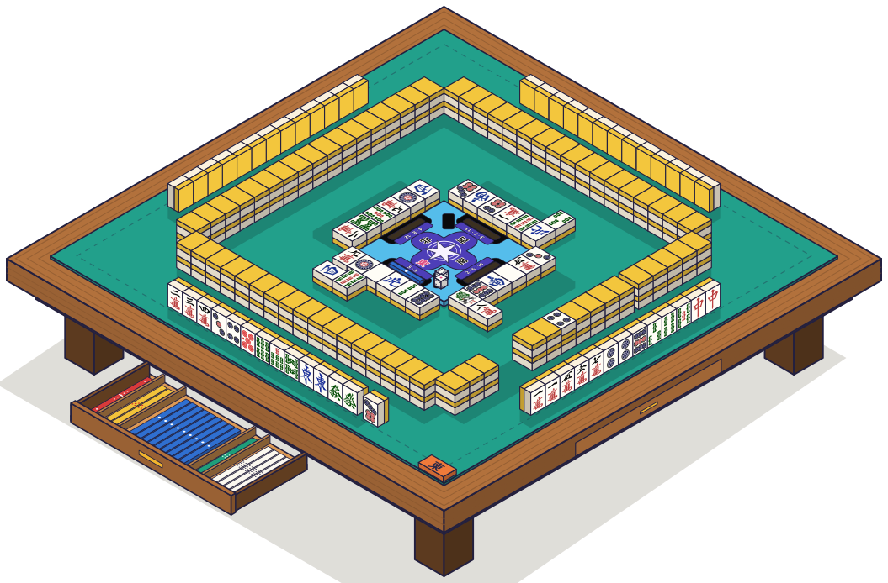
RINCÓN RIICHI
Riichi Mahjong · guia passo a passo
Riichi mahjong é um jogo para quatro jogadores jogado com peças, parecido com o rummy: os jogadores se revezam para comprar uma peça e descartar outra, buscando completar a mão. Cada mão dá pontos e, ao fim de várias rodadas, ganha quem tem mais pontos.
Se preferir aprender jogando, leia «A mesa», «Preparação» e «A sua vez» e comece: o resto você consulta pelo caminho. As palavras com sublinhado pontilhado podem ser clicadas: levam à definição no Dicionário (páginas 13 e 14).
Com as suas 13 peças, mais a que você compra, você quer formar 4 grupos e 1 par: 14 peças no total. Ao conseguir, você ganha a mão.
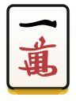
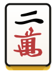
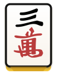
Grupo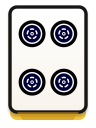
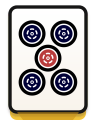
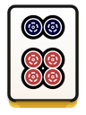
Grupo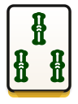
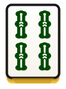
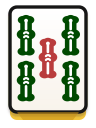
Grupo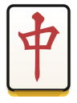
Grupo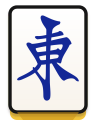
ParQuase tudo acontece em uma mesa compartilhada. Isto é o que você verá:
Assentos e ventos. Cada assento tem um vento: Leste (você, o dealer), Sul (à sua direita), Oeste (em frente) e Norte (à sua esquerda). Os turnos seguem nesta ordem, no sentido anti-horário.
3O muro, as peças viradas para baixo de onde se compra. Monta-se em quatro lados de 17 pilhas.
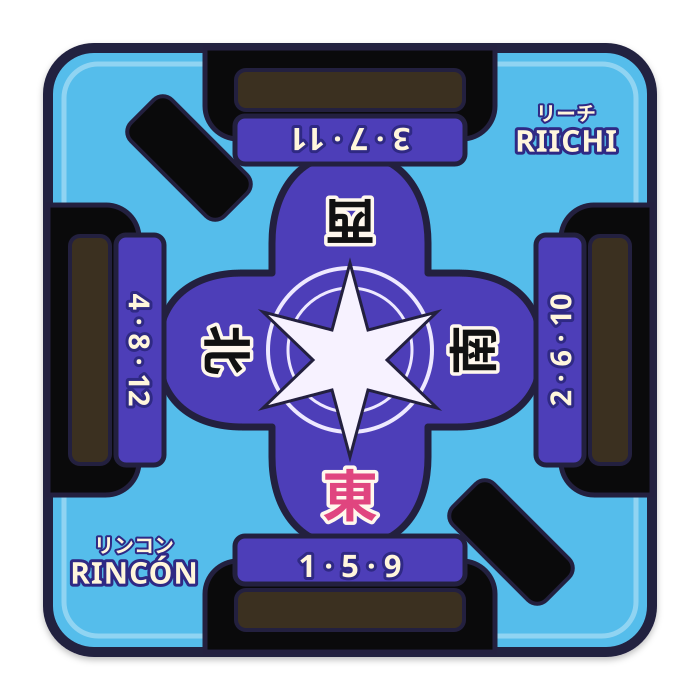
O compass, no centro da mesa: mostra o vento de cada assento e os números usados com os dados.
A placa, que marca o vento da rodada. Fica na borda, à direita do dealer.
Os palitos, que guardam os pontos. Cada cor vale uma quantia fixa.
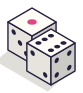
Os dados, lançados no início para decidir por onde se abre o muro.
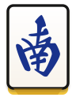
Sul à sua direita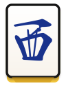
Oeste em frente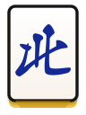
Norte à sua esquerdaHá 34 tipos de peça e 4 cópias de cada: 136 no total. Cada uma tem uma face com o desenho e um verso colorido.
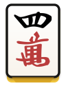
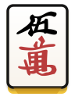
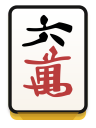
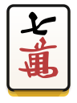
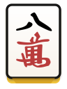
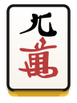
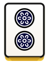
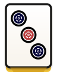
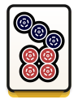
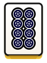
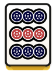
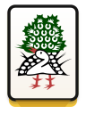
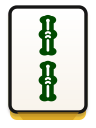
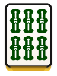
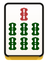
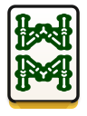
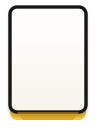
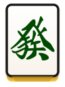
Haku (branco) · Hatsu (verde) · Chun (vermelho)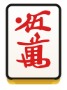
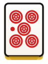
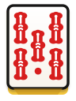
Cada um vale um bônusOs cincos vermelhos (aka) contam como um 5 normal, mas cada um na sua mão soma 1 han (ponto de valor) ao ganhar. Aparecem junto com os outros cincos, não no lugar deles.
Há quatro 5 de círculos idênticos: assim você pode contar quantos restam.
O muro morto. A partir do corte separam-se sempre 7 pilhas (14 peças): é o muro morto, fora de jogo exceto em ocasiões especiais. Se o corte cai perto do fim de um muro, a contagem continua no muro ao lado.
A dora. Na 3ª pilha do muro morto vira-se a peça de cima: é o indicador de dora. A peça seguinte a essa vale um bônus para quem a tiver na mão.
O dealer começa e a vez segue para a direita, no sentido anti-horário. Na sua vez você faz três coisas:
Ordenar serve para ver seus grupos de relance: junte cada naipe (manzu, pinzu, souzu) e deixe as honras juntas, com as iguais coladas. Você pode reordenar como quiser, desde que seja fácil ver o que tem.
Sua mão tem três grupos, dois pares… e uma peça solta, o 9 de círculos. É a que você descarta.
Agora você compra um Chun (中): com os seus dois Chun forma um trio e a mão se completa.
Os descartes são informação: observe o que os outros descartam para saber quais peças já não restam e o que estão buscando.
7Uma mão completa são 4 grupos e 1 par. Há dois tipos de grupo.
Três números seguidos do mesmo naipe. Ventos e dragões não formam sequências.
Três peças idênticas. Aqui ventos e dragões servem.
Duas peças idênticas. Toda mão completa tem exatamente um.
4 × 3 + 2 = 14
13 peças na mão mais a que você compra: 14. Os grupos e o par usam as 14.
Tenpai é estar a uma só peça de ganhar. Noten é o contrário. Ambos importam quando o muro acaba sem vencedor: quem está em tenpai recebe dos noten (3.000 pontos no total).
8Além de comprar do muro, você pode pegar a peça que outro jogador acabou de descartar: isso se chama chamada. Você diz o nome em voz alta, pega a peça e coloca o grupo virado para cima, com a peça pega girada para quem a descartou.
Você só pode pegar a peça do jogador que joga logo antes de você (sua esquerda), e só para formar uma sequência com duas das suas peças.
Com duas peças iguais você pode pegar a terceira que qualquer jogador descartar. A vez pula para você.
Com três iguais você pega a quarta. Um kan acrescenta uma peça extra: você compra uma de reposição do muro morto e outro indicador de dora é revelado.
Ao fazer uma chamada sua mão passa de fechada a aberta: você não pode mais declarar riichi e alguns yaku valem menos ou não contam. Em troca, avança mais rápido.
9Você ganha quando completa a mão e cumpre ao menos um yaku, uma condição que a mão deve cumprir. Há duas formas de ganhar:
Você ganha com a peça que outro jogador descartou. Só quem a descartou paga.
Ao ganhar você diz «Tsumo» ou «Ron» e mostra a mão virada para cima.
Riichi. Com a mão fechada e a uma peça de ganhar (tenpai), você pode declarar «Riichi»: descarta a peça deitada de lado e põe um palito de 1.000 no encaixe do compass. Daí em diante você não muda a mão: só compra e descarta o que comprou.
Furiten. Se você já descartou alguma das peças com que ganharia, não pode ganhar por ron, só por tsumo. Ninguém avisa: você tem que perceber.
10Os pontos são guardados em palitos coloridos. Cada palito equivale a uma quantia fixa. Cada jogador começa com 25.000 pontos e os guarda na gaveta.
Ao ganhar, conta-se o valor da mão com han (yaku e dora) e fu (minipontos). Juntos dão os pontos; na seção de pontuação do site há tabelas completas.
Quem paga deixa os palitos sobre a mesa e o vencedor os pega.
Os pontos decidem a partida: quando termina, são comparados e ganha quem tem mais.
11A partida é jogada mão após mão. Cada mão termina quando alguém ganha ou quando o muro acaba sem vencedor.
Uma rodada são quatro mãos, uma para cada dealer. A placa da borda marca o vento da rodada: Leste primeiro, Sul depois.
Partida curta: só a rodada Leste.
Partida normal: rodadas Leste e Sul.
No fim contam-se os palitos de cada jogador. Ganha quem tem mais pontos.
As palavras deste guia, em linguagem simples.
Continuação.
Este guia acompanha o site Rincón Riichi. Lá você pode ver as mesmas ideias em animações, experimentar cada passo e praticar com exercícios curtos.
rincon-riichi.vercel.app